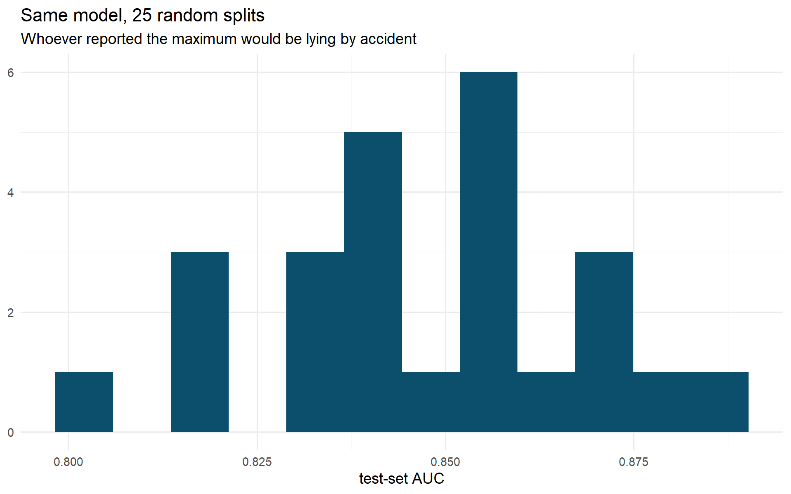
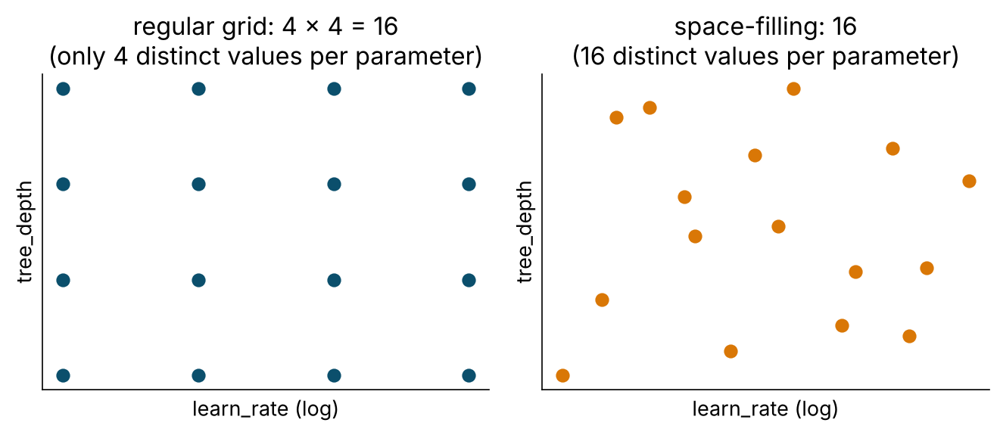
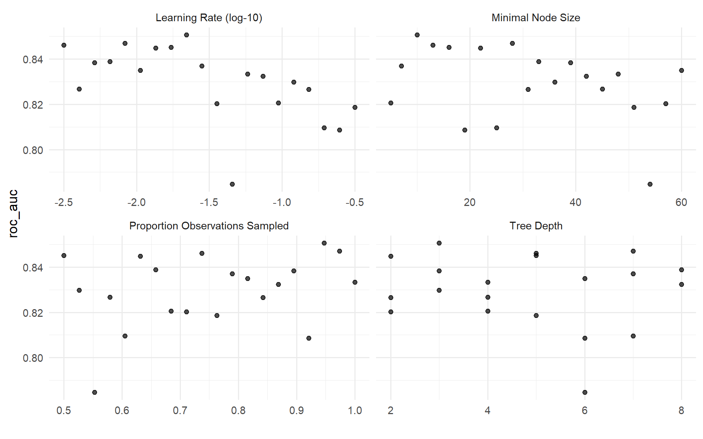
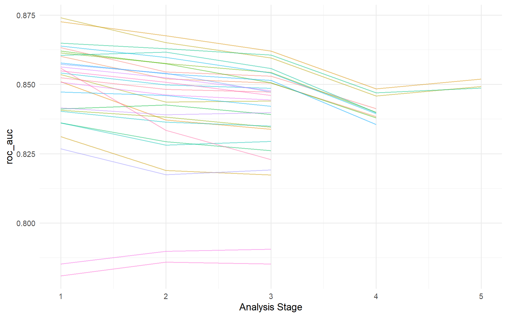
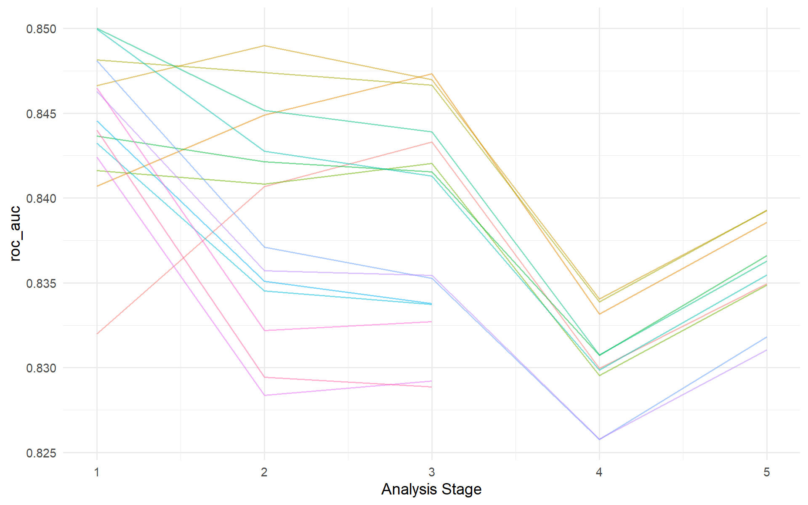

# WHERE WE ARE ---------------------------------------------------------------------------------------------
# Three families and a baseline, compared on the same folds (T4 bake-off). Every one of them used hand-picked
# hyperparameters. NEW TODAY: tune() replaces the hand-picked values - grids, racing, the one-SE rule - and the
# tuned XGBoost is saved to outputs/t05_xgb_last.rds, which Tutorials 6 and 7 load instead of refitting.
source("R/prep_nhms.R")
library(finetune)
library(future)
plan(multisession, workers = max(1, parallel::detectCores() - 1))
dir.create("outputs", showWarnings = FALSE)
lr_wf <- workflow(dm_rec, logistic_reg() |> set_engine("glm"))Tutorial 5 · Resampling and tuning
Session 6 · Day 2, 10.50–11.50 · Slides 06
0 · Start
1 · Why one split lies
The same logistic model, 25 different random 80/20 splits:
set.seed(1)
many_splits <- mc_cv(dm_data, prop = 0.80, times = 25, strata = undx_dm) # Monte-Carlo CV = repeated random splits
set.seed(1)
lr_many <- fit_resamples(lr_wf, many_splits, metrics = metric_set(roc_auc))
collect_metrics(lr_many, summarize = FALSE) |>
ggplot(aes(.estimate)) +
geom_histogram(bins = 12, fill = "#0b4f6c") +
labs(x = "test-set AUC", y = NULL, title = "Same model, 25 random splits",
subtitle = "Whoever reported the maximum would be lying by accident") +
theme_minimal()
collect_metrics(lr_many) # mean and std_err: THIS is what to reportNothing changed but which 1,000 people were held out. Any number in that spread is a legitimate “test-set AUC”. A paper that reports the top of it is not lying; it is reporting one draw from a distribution and calling it the answer. With ~115 cases in a test set the spread is unavoidable.
Important
Report mean ± standard error across resamples. The SE is the number that tells you whether two models differ.
3 · Tuning: mark, bound, search
Mark what to tune
xgb_tune_spec <- boost_tree(trees = 500, learn_rate = tune(), tree_depth = tune(), min_n = tune(), sample_size = tune()) |>
set_engine("xgboost") |>
set_mode("classification")
xgb_tune_wf <- workflow(dm_rec, xgb_tune_spec)tune() is a placeholder. The workflow is complete but cannot be fit() until the placeholders are filled.
Bound the search space (dials)
xgb_params <- extract_parameter_set_dials(xgb_tune_wf) |>
update(
learn_rate = learn_rate(range = c(-2.5, -0.5)), # log10 scale -> 0.003 .. 0.32
tree_depth = tree_depth(range = c(2L, 8L)),
min_n = min_n(range = c(5L, 60L)),
sample_size = sample_prop(range = c(0.5, 1))
)
xgb_paramsEvery tunable argument has a dials object with a default range and, where sensible, a log transform (learn_rate, penalty, cost, rbf_sigma). Tune those on the log scale or you waste most of the grid at one end. Defaults are deliberately wide — narrow them with domain sense. Ranges that depend on the data (mtry ≤ number of predictors) need finalize() or an explicit update().
Lay out the candidates
grid_regular(xgb_params, levels = 3) |> nrow() # 3^4 = 81 candidates, only 3 distinct values each[1] 81set.seed(2026)
xgb_grid <- grid_space_filling(xgb_params, size = 20) # 20 candidates spread evenly over the 4-D space
xgb_grid
Search: every candidate × every fold
set.seed(2026)
t0 <- Sys.time()
xgb_tuned <- tune_grid(xgb_tune_wf, resamples = dm_folds, grid = xgb_grid,
metrics = metric_set(roc_auc, brier_class), control = control_grid(save_pred = TRUE))
Sys.time() - t0Time difference of 1.040263 minscollect_metrics(xgb_tuned) |> filter(.metric == "roc_auc") |> arrange(desc(mean)) |> head()autoplot(xgb_tuned, metric = "roc_auc") + theme_minimal()
Read the panels: a flat panel means that parameter does not matter much in this range; a slope or peak tells you where to look next. Learning rate is almost always the one that matters.
Choose
show_best(xgb_tuned, metric = "roc_auc", n = 5)select_best(xgb_tuned, metric = "roc_auc") # numerically bestselect_by_one_std_err(xgb_tuned, metric = "roc_auc", tree_depth, desc(min_n)) # SIMPLEST within 1 SE of best
The one-standard-error rule
Among candidates whose score is within one standard error of the best, choose the simplest (shallower trees, larger leaves, more regularisation). Simpler = less overfit, faster, easier to explain — and the “best” was probably best by luck. The sorting arguments define what “simpler” means.
4 · Racing: stop wasting folds on hopeless candidates
set.seed(2026)
t0 <- Sys.time()
xgb_race <- tune_race_anova(xgb_tune_wf, resamples = dm_folds, param_info = xgb_params, grid = 30,
metrics = metric_set(roc_auc, brier_class),
control = control_race(verbose_elim = TRUE, save_pred = TRUE))
Sys.time() - t0Time difference of 53.47074 secsplot_race(xgb_race) + theme_minimal()
show_best(xgb_race, metric = "roc_auc", n = 5)After the first three folds an ANOVA model asks, for each candidate, “is this one significantly worse than the leader?” — and if so, drops it. Thirty candidates in about the time twenty took, same answer.
Also available: Bayesian optimisation
set.seed(2026)
xgb_bayes <- tune_bayes(xgb_tune_wf, resamples = dm_folds, initial = xgb_tuned, iter = 10, param_info = xgb_params, # seed it with the grid results
metrics = metric_set(roc_auc, brier_class), control = control_bayes(no_improve = 5, verbose_iter = TRUE))
autoplot(xgb_bayes, type = "performance")It fits a model of metric ~ hyperparameters to the results so far and proposes the next most promising candidate. Worth it when each fit is expensive and you can afford few evaluations.
5 · Finalise — and the test set, once
xgb_final_wf <- finalize_workflow(xgb_tune_wf, select_best(xgb_race, metric = "roc_auc"))
xgb_final_wf══ Workflow ════════════════════════════════════════════════════════════════════
Preprocessor: Recipe
Model: boost_tree()
── Preprocessor ────────────────────────────────────────────────────────────────
5 Recipe Steps
• step_impute_median()
• step_impute_mode()
• step_dummy()
• step_zv()
• step_normalize()
── Model ───────────────────────────────────────────────────────────────────────
Boosted Tree Model Specification (classification)
Main Arguments:
trees = 500
min_n = 10
tree_depth = 3
learn_rate = 0.00699564215671263
sample_size = 0.637931034482759
Computational engine: xgboost xgb_last <- last_fit(xgb_final_wf, split = dm_split, metrics = cls_metrics)
collect_metrics(xgb_last)last_fit() fits the finalised workflow on all training data and predicts the locked test set, in one call. This is the first time dm_test has been touched since Tutorial 1. If the test estimate and the CV estimate disagree wildly, something is wrong — a leak in CV, distribution shift, or bad luck with 115 cases. Investigate; do not go back and re-tune on the test set.
set.seed(2026)
lr_last <- last_fit(lr_wf, split = dm_split, metrics = cls_metrics)
bind_rows(logistic = collect_metrics(lr_last), xgb_tuned = collect_metrics(xgb_last), .id = "model") |>
select(model, .metric, .estimate) |>
pivot_wider(names_from = model, values_from = .estimate)xgb_fit <- extract_workflow(xgb_last) # the fitted workflow: save it, deploy it, explain it tomorrow
saveRDS(xgb_last, "outputs/t05_xgb_last.rds")
saveRDS(xgb_race, "outputs/t05_xgb_race.rds")Tuning took XGBoost from “worse than logistic” (yesterday’s defaults) to “a little better”. That is the honest size of the prize on tabular health data. Cleaning and the leakage audit moved the needle by 0.1–0.5.
6 · Two things to know, not to do today
Nested cross-validation. Picking the best of 30 noisy candidates and reporting its CV score is slightly optimistic. Usually small (≤ 0.01 AUC) and the locked test set catches it. With small n, many candidates, or no test set, run an outer loop of folds and do the whole tuning inside each — nested_cv() plus a little purrr; TMwR has a worked chapter.
Parallel processing changed. tune ≥ 1.3 uses the future framework. doParallel::registerDoParallel() from older notes does nothing now. plan(multisession, workers = n) is all you need; stop at 3–4 workers on an 8 GB laptop.
Your turn (10 min)
Solution A
n_pred <- dm_rec |> prep() |> bake(new_data = NULL) |> select(-undx_dm) |> ncol()
rf_tune_wf <- workflow(dm_rec, rand_forest(trees = 500, mtry = tune(), min_n = tune()) |>
set_engine("ranger") |> set_mode("classification"))
rf_params <- extract_parameter_set_dials(rf_tune_wf) |>
update(mtry = mtry(range = c(2L, 18L)), min_n = min_n(range = c(5L, 60L)))
set.seed(2026)
rf_race <- tune_race_anova(rf_tune_wf, dm_folds, param_info = rf_params, grid = 15,
metrics = metric_set(roc_auc, brier_class), control = control_race(verbose_elim = TRUE))
plot_race(rf_race) + theme_minimal()
top <- show_best(rf_race, metric = "roc_auc", n = 10) |> mutate(within_1se = mean >= max(mean) - std_err[1])
toptop |> filter(within_1se) |> arrange(desc(min_n), mtry) |> slice(1)Most forest candidates survive all five folds and the AUC range across the grid is ~0.01: random forests are insensitive to their settings. (select_by_one_std_err() exists, but on a racing object it also averages the early-eliminated candidates, so apply the rule by hand as above.) The one-SE pick usually has a large min_n — smoother probabilities, better Brier, same AUC.
What to remember
- One split = one noisy draw. Resample; report mean ± SE.
tune()marks;dialsbounds (log scales!);tune_grid()/tune_race_anova()search — always on resamples.- Prefer the simplest candidate within one SE of the best.
finalize_workflow()→last_fit()→ the test set, exactly once.
Next: Tutorial 6 — evaluation, calibration and explanation (Session 7, 11.50).